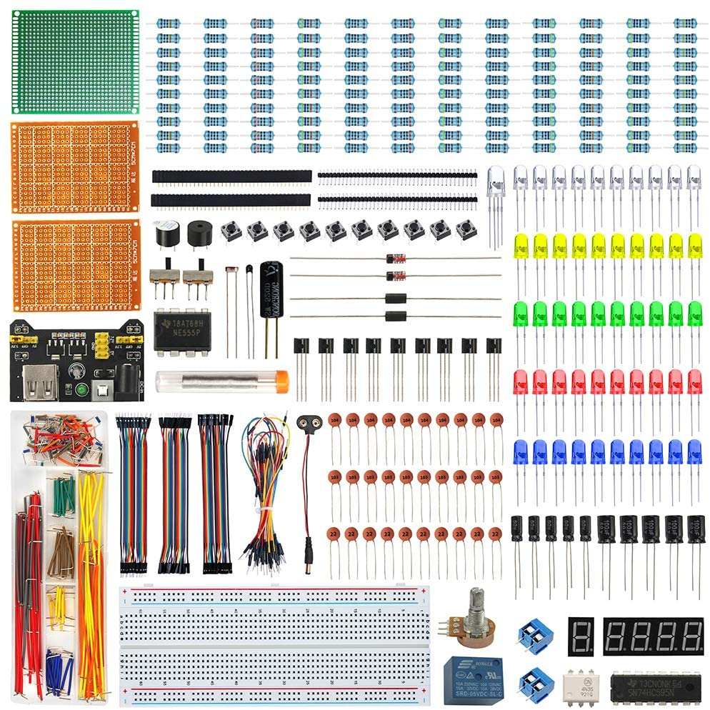
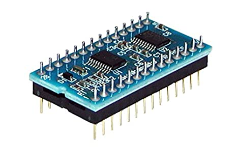
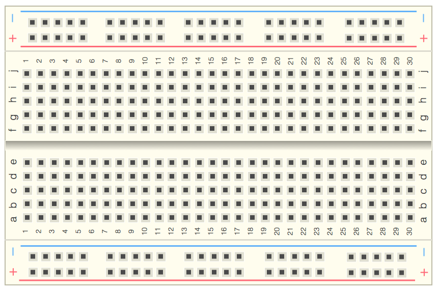
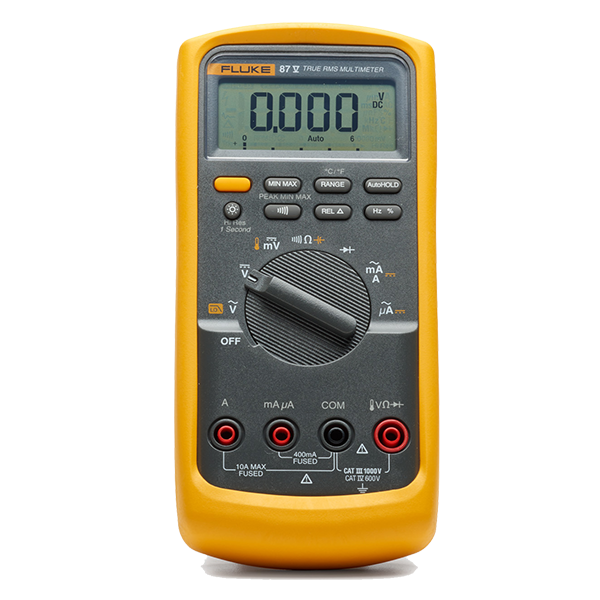

初心者が買うべき電子部品及び器具
電子工作では部品および器具がたくさんある。その中で初心者にとって何を買ったら良いのかは悩みの種となる。 そこでこれだけあれば誰でも簡単に電子工作をすることができるという部品や器具を紹介する。
初心者が買うべき電子部品
- スターターキット
- マイコン
- モーター
スターターキット
スターターキットは名前の通り電子工作を始める人向けの一式セットのことです。
中にはあとで説明するブレッドボードをはじめ、ダイオード、抵抗、ケーブルなど主に必要となる部品が入っています。
また、価格も部品を一つ一つ集めるより安く、どの部品を買ったらよいのかと悩む必要もありません。
スターターキットにはいろいろな種類がありますが、僕がお勧めするスターターキットはこれです。

このスターターキットは価格も他と比較して安く、部品としては何が起きているかすぐにわかる発光ダイオードが多く入っていて初めての人が飽きないようになっている。
ここをクリックするとこのスターターキットのサイトへと飛べます。
マイコン
初心者にオススメのマイコンのところで詳しく紹介しているので是非参考にしてください。 マイコンにプログラムを書く時に使えるのがIDEというソフトである。このソフトはネットで無料でダウンロードできます。 これに関するwebや本も情報は多くの参考資料があるためとっつきやすい。 おすすめのサイトはこちらです。 下の写真がマイコンです。
モーター
上の2つと比べてイメージしやすいでしょう。モーターはスターターキットに入っていることはほとんどないですが、あるととても楽しいです。 モーターは動作が簡単で現象が可視化するため、わかりやすいです。 プログラムと組み合わせることで、一定時間での逆回転、回したり止めたりといろいろな動きができるため、初めての人に取ってとても良い部品です。
初心者が買うべき器具
- ブレッドボード
- マルチメーター
- パソコン
ブレッドボード
ブレッドボードは元々、内部つながっているので、はんだをせずに回路を作ることができます。 また、一度はんだをしてしまうと再利用することはできませんが、 ブレッドボードでは、簡単につけなおすこともできますし、コスパもよいです。 下の写真がブレッドボードです。 マルチメーター
実験で用いることもある機械ですが、電子工作においてもとても役立ちます。 マルチメーターを用いることで、電圧、電流、抵抗値などを測ることができるため、今の回路の状態を知ることができる。 また、この器具があると、もしうまく動かなかったと時に簡単にどこが原因なのかを見つけることができる。 下の写真がマルチメーターです。
パソコン
プログラミングする際に必ず必要となるパソコンですが、プログラミング以外にも電子部品について少し調べたいと思った時にも使えて便利です。 スペック的には良いスペックの物でなければいけないというわけではないのであまり気にする必要はありません。